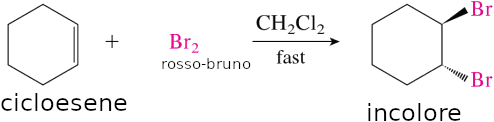
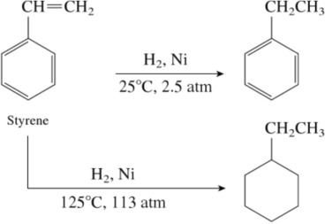

Benzene
I composti organici sono stati divisi in due grandi classi: i composti alifatici e i composti aromatici. Il significato originale delle parole "alifatico" (Dal greco antico ἄλειφαρ, áleiphar, "olio, unguento") e "aromatico" (profumato) attualmente non ha più valore. I composti alifatici comprendono tutti quelli a catena aperta e quei composti ciclici che assomigliano a quelli a catena aperta. Sono composti aromatici il benzene e i composti che hanno proprietà chimiche simili a quelle del benzene.
Gli idrocarburi alifatici - gli alcani, alcheni, alchini e i loro composti ciclici analoghi - danno reazioni di addizione e di sostituzione radicalica; l'addizione avviene sui legami multipli e la sostituzione radicalica in qualsiasi altro punto della catena alifatica.
Contrariamente agli idrocarburi alifatici, gli idrocarburi aromatici sono caratterizzati dalla tendenza a subire la sostituzione eterolitica.
Il Benzene, è un composto incolore con punto di fusione di 6°C e di ebollizione di 80°C. The fact that benzene is a liquid rather than a gas at room temperature is evidence of the existence of attractive forces between the molecules. In the case of benzene these are relatively weak van der Waals' forces, and thermal agitation keepss the molecules from associating into ordered clusters- Venne isolato per la prima volta nel 1825 da Michael Faraday. He extracted it from the liquid residue obtained after heating whale oil under pressure per produrre il gas all'epoca usato nelle lampade a gas. In 1834, Eilhard Mitscherlich determinò la formula bruta (C6H6) del composto isolato da Faraday, dandogli il nome di benzino a causa della sua relazione con l'acido benzoico, a known substituted form of the compound. Successivamente venne rinominato benzene.
Benzene’s molecular formula, C6H6, un alto grado di instaturazione. Compared with the corresponding alkane of molecular formula, C6H14, benzene’s index of hydrogen deficiency is four, which can be met by an appropriate combination of rings, double bonds, and triple bonds. For example, a compound of molecular formula C6H6 might have four double bonds, or three double bonds and one ring, or two double bonds and two rings, or one triple bond and two rings, and so on. Considering benzene’s high degree of unsaturation, it might be expected to show many of the reactions characteristic of alkenes and alkynes. Al contrario, il benzene è straordinariamente non-reattivo! Quando il bromo è aggiunto ad una soluzione di un alchene, come il clicoesene, in dicloroetano, questa assume una colore rosso-bruno ma una rapida reazione la fa diventare subito incolore

+ Br2 ⟶CH2Cl2 fast
-1,2-dibromocyclohexane.png)
+
-1,2-dibromocyclohexane.png)
Contrariamente al cicloesene, il benzene non reagisce con il bromo nelle stesse condizioni. Sotto condizioni più vigorose (presenza di acido di Lewis come catalizzatore, come il tribromuro di alluminio, ed alte temperature), il benzene reagisce con il bromo. Si osserva però la sostituzione di un atomo di H dell'anello con il Br piuttosto che l'addizione al doppio legame di Br come nel caso degli alcheni.
 Benzene |
+ Br2 | ⟶ | No reaction | ||
| | + AlBr3 | heat ⟶ | Bromobenzene | + | HBr |
Un altro esempio è dato dalla idrogenazione catalitica dello stirene in presenza di un catalizzatore a temperatura ambiente e a pressioni relativamente basse. L'anello del benzene non prende parte alla reazione, solamente il doppio legame reagisce. La reazione dell'anello benzenico si verifica sotto condizioni più vigorose a temperature e pressioni più elevate
La lentezza di tale reazione con il Br2 e le condizioni vigorose necessarie per l'idrogenazione catalitica mostrano che il benzene è molto meno reattivo degli alcheni. Per questo motivo prima che i rischi relativi alla sua cancerogeneità fossero sollevati, il benzene, data la sua scarsa reattività, veniva usato come solvente per molte reazioni chimiche.
Stabilità del benzene
Si può quantificare la stabilità del benzene misurando il calore di idrogenazione. L'idrogenazione catalitica di un alcano è una reazione esotermica. Il cicloesene ha un calore di idrogenazione ΔH°hydrog = -118 kJ/mol (228.2 kcal/mol), e il 1,3-cicloesadiene, un diene coniugato, ha ΔH°hydrog = -230 kJ/mol (255.0 kcal/mol). As noted in Section 14.1, il valore per il 1,3-cyclohexadiene è leggermente inferiore di due volte quello del cicloesene perché i dieni coniugati sono più stabili di quelli isolati. Carrying the process one step further, we might expect ΔH°hydrog for “cyclohexatriene” (benzene) to be a bit less than 2356 kJ/mol, or three times the clohexene value. The actual value, however, is -206 kJ/mol, some 150 kJ/mol (36 kcal/mol) less than expected. Since 150 kJ/mol less heat than expected is released during hydrogenation of benzene, benzene must have 150 kJ/mol less energy to begin with. In other words, benzene is more stable than expected by 150 kJ/mol (Figure 15.2).